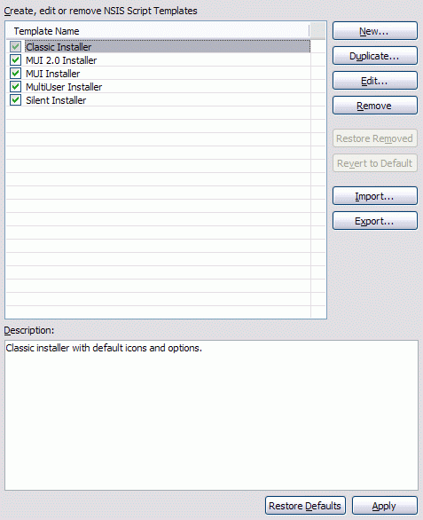

Preferences
Script Templates
The Script Templates preference page is used to manage script templates. A script template is set of commonly used options while generating a script using the EclipseNSIS Script Wizard. There are three types of script templates:
- Built-in: Script templates which are prepackaged along with the plugin.
- Custom: Built-in script templates which have been modified by the user.
- User-defined: Script templates which have been created by the user.

- Script Templates
- Displays the list of script templates. Only checked templates are enabled for use by the EclipseNSIS Script Wizard. To disable/enable a template uncheck/check the checkbox associated with it The following buttons allow manipulation and configuration of script templates. ← Back
- Duplicate
- Creates a duplicate of the currently selected script template and opens a dialog to edit it. ← Back
- Remove
- Remove all selected script templates. ← Back
- Restore removed
- Restore any built-in or custom script templates that have been removed. ← Back
- Revert to default
- Revert all selected custom templates back to their original built-in states. ← Back
- Import
- Imports script templates from the file system. ← Back
- Export
- Exports all selected script templates to the file system. ← Back
- Description
- Displays the description of the selected script template. ← Back
Script Template Editor
The Script Template Editor dialog is used to create new and edit existing script templates. It is identical in function to the Script Wizard, except for the first page (show below).

- Name
- Script template name. ← Back
- Description
- Script template description. ← Back
- Enabled
- Flag indicating whether the script template is enabled for script creation. Enabled script templates are shown on the Script Wizard Welcome page. ← Back
Previous | Contents | Next
Copyright © 2004-2010 Sunil Kamath (IcemanK).